Integra técnicas, filosofías y prácticas de distintas especialidades científicas y tradiciones ancestrales para producir algo más profundo y sostenido: hábitos saludables, relacionamiento consciente, mejores decisiones. Experimentas nuevas situaciones continuamente dentro de un espacio seguro que permite que tu cerebro consolide patrones nuevos.
Arquitectura de Identidad y Desempeño
El origen determina el resultado.Tú eres el origen.
Acompañamiento estratégico para fundadores, directores y líderes de familia que ya conocen:
- El agotamiento de decidirlo todo.
- La fricción en sus relaciones más importantes.
- El desgaste de tiempo, energía y dinero.
Te acompaño a volver a tu centro y decidir desde ahí.
Sesiones en Español e Inglés.
- Paso 1 · Evaluación de Fracturas Raíz: 5 min, sin costo
- Paso 2 · Sesión de Mapeo: 60 min · $1,000 MXN (≈ USD $55)
- 100% abonables a tu programa.
¿Ya conoces tus fracturas raíz? Agenda directo tu Sesión de Mapeo.
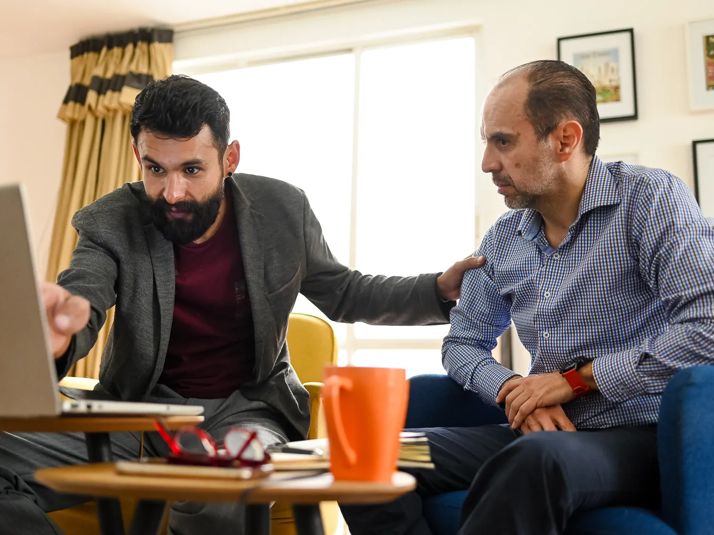
Toca un punto para ver qué área mide
¿Qué puedes lograr?
No es sentirte motivado una semana. Es dejar de repetir lo que ya sabes que no quieres repetir.
- De reaccionar en automáticoa decidir desde tu centro
- Del agotamiento constantea energía y tiempo para lo que importa
- De relaciones que desgastana vínculos donde puedes ser tú
- De cargar lo que te dañaa soltarlo sin pelearte contigo
Lo medimos en tu mapa de 12 áreas: lo que cambia se ve, no solo se siente.
Experiencias Reales
- 14 Años de campo
- 2,000+ Personas acompañadas · 200+ procesos 1 a 1
- 4.5/5 Satisfacción promedio en 100 casos evaluados con instrumentos propios
- +66% Caso documentado: mejora en 12 áreas de vida en 3.5 meses*
*Caso documentado, no promedio. Índice de 12 áreas autoevaluadas de 1 a 10, medido al inicio y al final del proceso.
"A través de su metodología, pude darme cuenta con más claridad de mis fortalezas y mis áreas de oportunidad. Revisamos diferentes áreas de mi vida y trabajamos en ellas para mejorar mi desempeño, mi aceptación y mi autoconocimiento."
"Los resultados fueron claros: aumento en ventas, mejor productividad y mayor desempeño del equipo. Pero lo más importante fue recuperar el liderazgo en nuestra dirección empresarial."
"…por llevarme al límite, por tu mano firme que no me soltó cuando lo necesitaba, por no permitir que cayera, por hacerme responder mis propias dudas y preguntas, por enseñarme que yo tengo las respuestas."
"Estar bien con el increíble valor que puedo compartir con el mundo y, al mismo tiempo, saber y abrazar todo lo que me limita, me acerca cada vez más a alcanzar mi definición de éxito, que es la libertad de ser quien en esencia soy."
"Llegué en un momento de depresión, desgaste y sin rumbo claro en mi vida personal y profesional. Me sentía insegura, dependiente y con miedo a tomar decisiones que llevaba años postergando. Logré recuperar la claridad, y asumir responsabilidad sobre mi vida. Tomé decisiones importantes que transformaron mi entorno personal y profesional. Mejoré la relación con mi familia, y construí una nueva etapa en mi vida, incluso formando una relación estable y sana."
"Antes de conocerlo, me sentía confundido, pasmado, sin un rumbo fijo. Sabía dónde quería ir, pero no sabía cómo llegar… Descubrí que era más sencillo de lo que imaginaba."
"Lo que realmente resalta en Fernando es su enfoque directo y pragmático. En lugar de rodeos, ofrece orientación clara y soluciones prácticas."
"Asumí una posición nueva como Director y necesitaba ordenar la estrategia, al equipo y entender mejor nuestro nicho de mercado… Más allá de las cifras, obtuve claridad para liderar con mayor seguridad."
"Estamos unidos por muchas inseguridades y desafíos que me acompañaste a vencer. Desde aquí, te agradezco por siempre tener una palabra de aliento, por siempre tenderme una mano."
"Me siento empoderado internamente. Ser vulnerable con alguien como Fernando fue verdaderamente hermoso."
Definición
¿Qué es Innovación Humana?
Un ciclo de autoconocimiento, transformación y reinvención personal, acompañado de principio a fin.
No es
Terapia clínica — no diagnostica ni la sustituye; si hace falta, trabajamos en paralelo con un profesional
Sí es
Centralidad — vuelves al centro desde el que decides y redefines tu origen
No es
Coaching motivacional — no trabaja sobre el ánimo ni metas efímeras
Sí es
Diseño y medición — mapas estratégicos, acción continua y validación de decisiones
No es
Una fórmula genérica de bienestar que aplica para todo
Sí es
Un camino único sobre una estructura constante, con 14 años de campo
Ruta de Arquitectura & Vínculos
Cuatro dimensiones de intervención.
Nada se construye sobre un cimiento inestable. Elige la dimensión que deseas explorar o revisa cómo impacta directamente en tu vida cotidiana.
Primer Horizonte / Raíz Interna
Identidad Personal & Estructura de origen
Reconstrucción del autoconcepto, instalación de hábitos saludables, desarticulación del diálogo interno destructivo y regulación emocional. Exploración de verdades y creencias para generar avances reales en tu día a día.
Mi Evaluación de Fracturas Raíz · Personal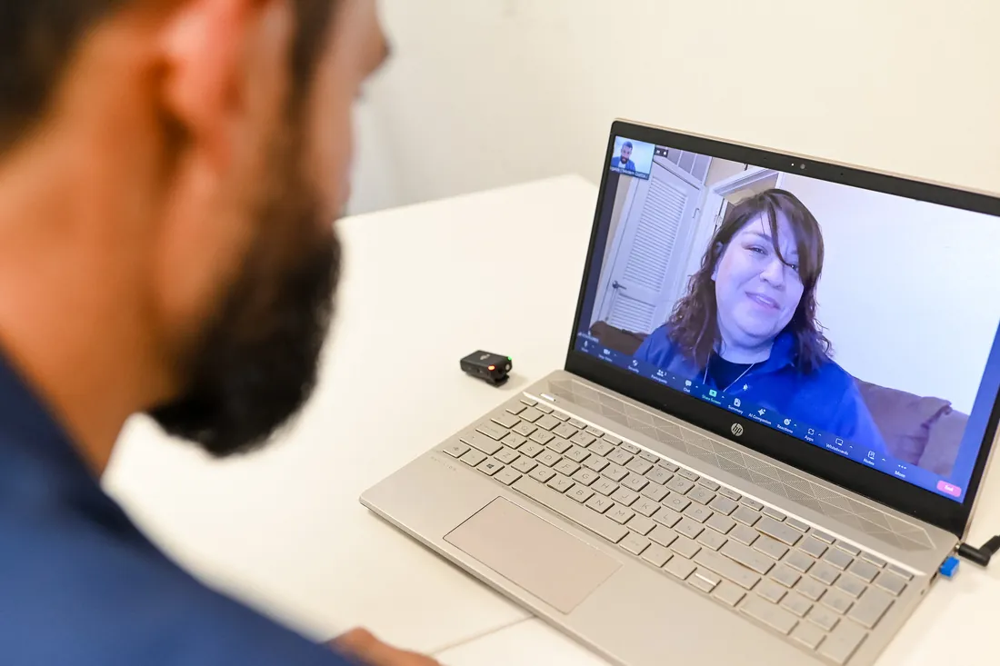
Sesión 1:1 · Horizonte Personal
Resultado Sistémico
Paz estructural, cese de la culpa reactiva y recuperación absoluta de la soberanía sobre tu tiempo y experiencia personal.
+67% en satisfacción personal. +40% en confianza personal. +45% en amor propio. +33% en salud física. +50% en comunicación y autoexpresión.* *Caso documentado, no promedio.
Segundo Horizonte / Rol Directivo o Gerencial
Identidad Profesional & Liderazgo organizacional
Intervención en la toma de decisiones estratégicas, diseño de objetivos claros y gestión de autoridad. Transición consciente del Operador Agotado al Arquitecto Soberano.
Mi Evaluación de Fracturas Raíz · Profesional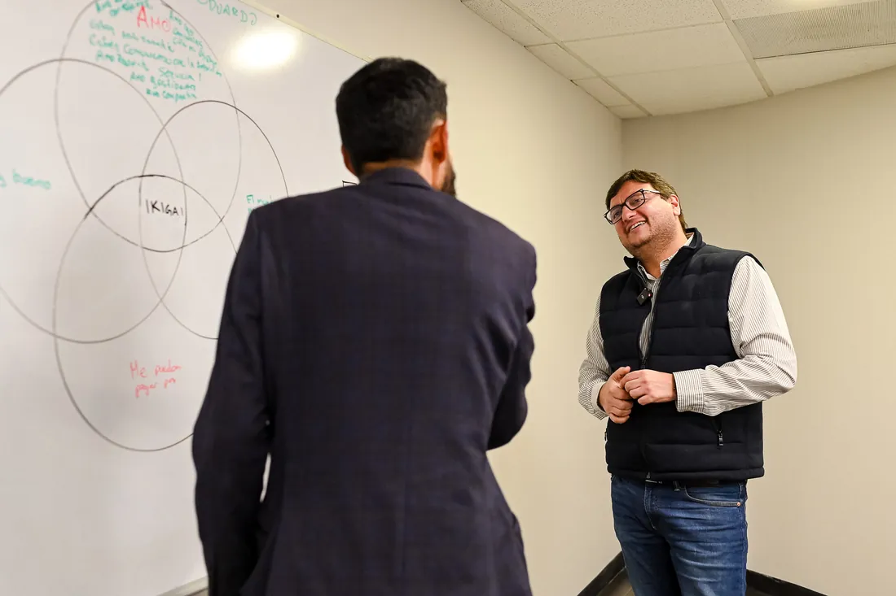
Acompañamiento Ejecutivo
Resultado Sistémico
Liderazgo con autoridad serena, reducción drástica de la fricción operativa y delegación efectiva.
+110% en liderazgo de equipo · hasta 93% de retención bajo un liderazgo formado con este método.* *Caso documentado, no promedio.
Tercer Horizonte / Innovación Comercial
Identidad Comercial & Desempeño del negocio
Tu forma de reclutar, vender, liderar y relacionarte con clientes es un espejo de tu estructura interna. Trabajamos primero esa base humana y, desde ahí, identificamos a tus clientes, cómo se comunican y qué valor les ofreces, y cuánto vale tu relación con ellos a largo plazo. Después rediseñamos tus procesos comerciales para que integren lo humano y lo tecnológico.
Mi Evaluación de Fracturas Raíz · Comercial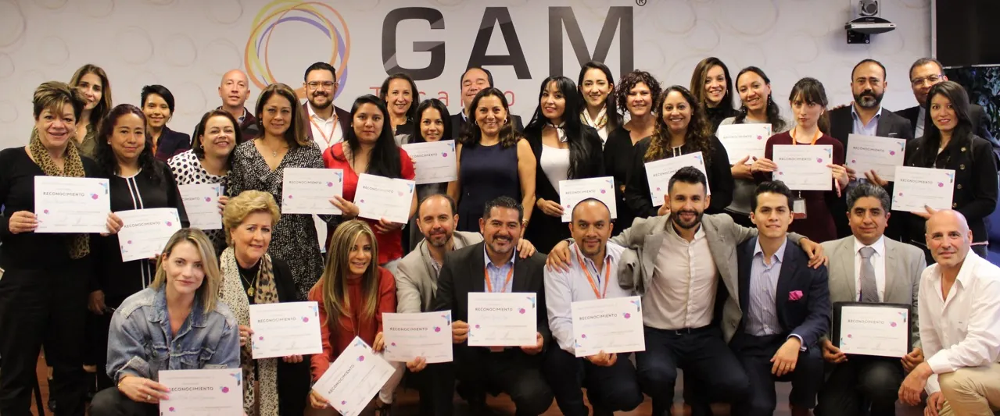
Cierre de Programa · Agencia GNP
Resultado Sistémico
En 3 a 6 meses la claridad comercial ya es visible en cómo decides, vendes y mides tu crecimiento.
Ingresos que se duplican (+100%) y conversión medida, no supuesta, en menos de 4 meses. +37% en ventas de productos premium vs. el cuatrimestre anterior.* *Caso documentado, no promedio.
Cuarto Horizonte / Conexión Espiritual
Trascendencia, Consciencia & Raíz Ancestral
Una dimensión de integración profunda. Trabajo de sanación humana y sabiduría ancestral (tradición Otomí/Wixárika/Lakota/Tolteca) para quienes buscan alinear su propósito cósmico y espiritual.
- Tu conexión es única, irrepetible y autónoma.
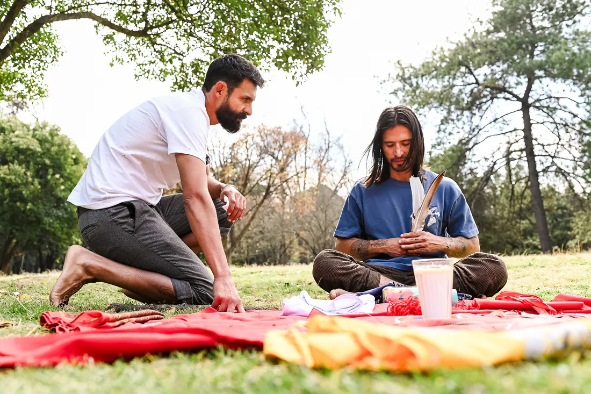
Ceremonia · Trascendencia
Contención Somática
Espacios de Temazcal, ceremonias tradicionales y cosmogonía ancestral que sostienen esta dimensión fuera de la lógica estandarizada.
Se respeta tu fe tal cual la vives: este trabajo no la sustituye ni la cuestiona. Te ayuda a conectar más con tu cuerpo y tu espíritu, a tu forma y a tu propio tiempo.
Cómo Trabajamos
Un método que se probó primero en mí.
Se construyó sesión a sesión, probándose primero en mi propia vida y después con generaciones de alumnos, hasta quedar en lo que funciona de verdad.
Se apoya en marcos validados por otros (psicología cognitivo-conductual y sistémica, coaching racional emotivo, directivo y de performance, y diseño estratégico UX/CX) y en una base que ninguno cubre solo: la cosmología y la sabiduría ancestral Otomí, Lakota, Tolteca y Wixárika. Rigor que mide y palabra que acompaña: dos lenguajes, un mismo centro.
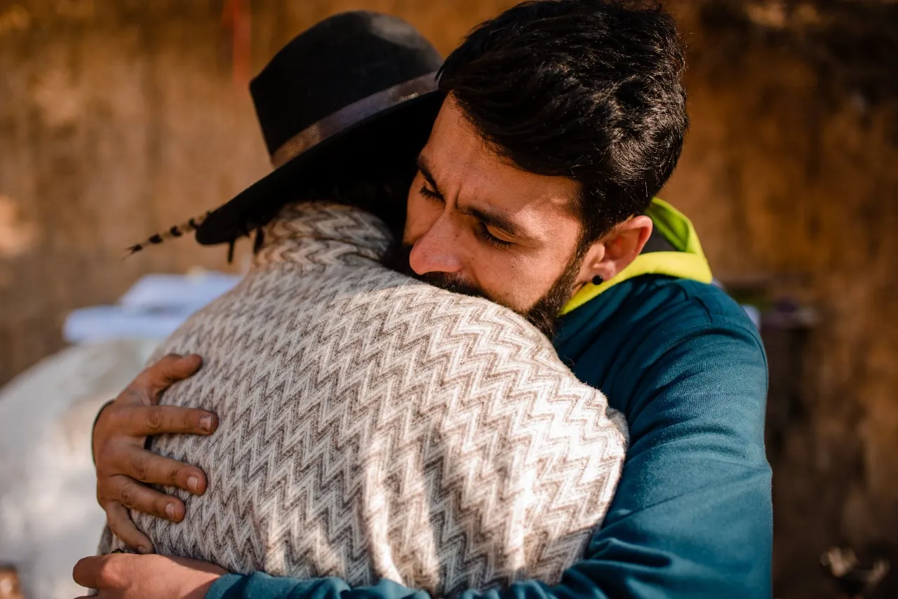
Así empezamos, en tres momentos:
1
Tu Evaluación de Fracturas Raíz
5 min por dimensión · sin costo
Eliges una dimensión (personal, profesional o comercial) y calificas 12 áreas. Un radar te muestra dónde tu estructura interna y tu resultado externo no coinciden. Es privado: solo me lo envías si quieres.
2
Sesión de Mapeo de tu Arquitectura Humana
60 min · $1,000 MXN, abonables al 100% si te inscribes en 4 semanas
Con tu evaluación sobre la mesa, dibujas tu autoimagen en 2 minutos y la interpretamos juntos: cómo te percibes, de dónde vienen esos patrones y qué los sostiene hoy.
3
Definimos la mejor ruta para ti
Después de la sesión
Elegimos juntos el programa y el esquema de pago que mejor se ajustan a tu necesidad.
Una vez que eliges tu ruta, así se trabaja el ciclo:
A
Ideas e historia
Exploramos tus ideas, creencias, patrones y la arquitectura que hoy sostiene tus decisiones actuales.
B
Diseño de nuevos hábitos
Diseñamos hábitos saludables y un relacionamiento consciente adaptado al ritmo real de tu día a día.
C
Sanar lo que más importa
Trabajamos las relaciones que más pesan en tu vida — no en abstracto, sino con personas y dinámicas reales.
D
Atreverte a ver
Te acompaño a mirar lo que normalmente evitas o no has podido ver, al ritmo que tú decidas — con respeto y rigor.
E
Estrategias y objetivos
Aclaramos tus metas y diseñamos la estrategia precisa para ejecutarlas sin fricción ni desgaste.
F
Medición que valida
Medimos constantemente tus resultados y progresos. La acción validada refuerza tu renovación de identidad.
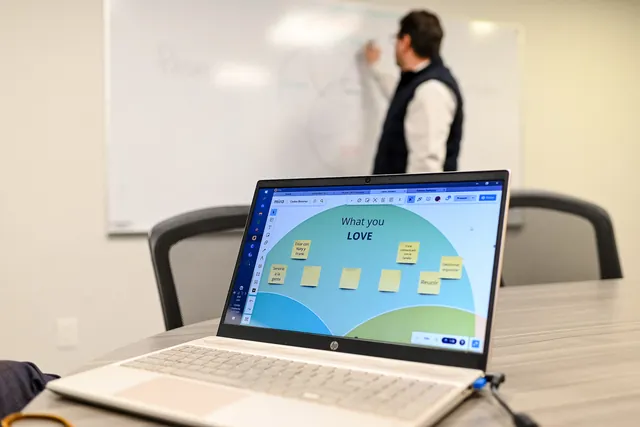
En cualquier horizonte el formato es el mismo: acompañamiento 1 a 1, en línea, por videollamada. En Reinvención y A medida, además, lo que piensas y lo que has logrado se vuelve un mapa que diseñamos juntos y se queda contigo, para que puedas reconocerte de otras formas.
Filtro de Elección
¿Cómo sé si Innovación Humana es para mí?
Ya hiciste terapia. Ya probaste otras formas de estar mejor. Y sigues volviendo al mismo lugar. Lo que ves afuera es el reflejo de una estructura interna que aún no has mirado de frente.
Seguramente ya tienes una explicación. Quizá es una de estas:
- Una relación que no funciona“Es tóxica; el problema es esa persona.”
- Reaccionas siempre igual“Así soy yo: ansioso, explosivo, frío.”
- Un dolor que no se va“Esa depresión, esa ansiedad o esa pérdida ya deberían haber pasado.”
- Estrés que ya normalizaste“Es el precio de la vida que construí.”
- Hábitos que te dañan“Son solo mi válvula de escape.”
- Un equipo que no responde“Es su falta de capacidad o de responsabilidad.”
- Ventas que no despegan“Es el mercado, o mis clientes no tienen dinero.”
Cada explicación cubre una parte. Ninguna explica por qué se repite.
No es para ti si...
- Quieres que otro te diga qué hacer, en vez de construir tu propio criterio.
- Esperas resultados mágicos sin transformar lo que los produce.
- Necesitas que todo sea cómodo: aquí se nombra, con respeto, lo que incomoda.
Es para ti si...
- Has logrado y has perdido, y para volver a lograrlo toca aclarar qué importa de verdad.
- Sabes hacia dónde vas, pero te falta el sistema interno para sostenerlo.
- Reconoces que tu vida externa refleja una estructura interna sin resolver, y estás listo para mirarla.
Si te reconociste, el siguiente paso no es otro libro ni otro retiro. Es un mapa de 5 minutos y, si te hace sentido, una hora de trabajo contigo, con alguien que ya acompañó este proceso con más de 2,000 personas.
Acompañamiento & Guía
Fer U · Arquitecto de Innovación Humana
Este acompañamiento nace de un camino que recorrí primero en mí: mis aprendizajes, mis estudios, mis conclusiones, mis miedos y mis visiones. Por eso puedo señalarte costos, atajos y límites, y exigirte cuando hace falta. El camino es tuyo: tú eliges en cada momento, y tu centro solo tú puedes habitarlo. Seré tu Espejo humano.
Mi origen
Crecí con heridas que me quitaron la seguridad de ser yo. Por años lo compensé con lo que el mundo aplaude: emprendí 18 veces, gané y perdí todo, viví lo que parecía una vida envidiable, y aun así no podía habitar mi propia piel con gusto. Pasé también por adicciones y hábitos que me dañaban.
Lo que me cambió no fue otro logro. Fue volver al origen: aceptarme, valorarme y vivir en paz con quien soy. Hoy acompaño a otros en ese mismo camino, porque el origen siempre determina el resultado.
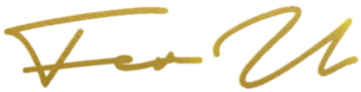
2006Inicio mi camino en innovación comercial
2011Comienzo mi trabajo personal y el servicio altruista
2012Trabajo de campo con personas y equipos
2019Empiezo a medir desempeño humano y comercial en cada proceso
2020Entro al sector asegurador
2021Comienzo mi formación en linaje ancestral
2026Hoy · Acompaño procesos 1 a 1, en línea, desde México, para mexicanos y para la comunidad internacional.
18
Laboratorios de Error
La autoridad que nace de haber sobrevivido a lo que el éxito aparente no resuelve. La fractura fue el maestro para detectar el desorden invisible.
15
Años de Servicio Altruista
En entornos complejos y de escasos recursos se aprende lo esencial: lo que sostiene un proceso es su peso humano y estructural, no el presupuesto publicitario.
6 años Sector asegurador
Esa misma raíz metodológica — probada durante catorce años — se afinó también durante seis años en la vertical aseguradora, atendiendo el ecosistema completo de una dirección de agencia: el Director, sus Gerentes de Desarrollo Comercial, los reclutadores de talento y los agentes, noveles y consolidados. Hoy esa disciplina ordena agencias completas bajo la marca ADC. Aquí opera directo sobre ti, sin intermediario organizacional.
Fer es Temazcalero de tradición Otomí, Aprendiz Marakame Wixárika, Tonalpouque y Danzante del Sol — años de formación dentro de una tradición y comunidad reales. Esta contención sostiene todo el trabajo técnico y conceptual.
Esquema de Trabajo
Modalidades de Acompañamiento.
Tú eliges el nivel de compromiso, inversión, profundidad y resultados, tomando en cuenta el diagnóstico que encontremos en tu Sesión de Mapeo.
Reconexión
$10,000 MXN
7 sesiones 1:1 de 60 min
Acompañamiento breve para un momento difícil, una decisión o una fractura de identidad específica.
- Videosesiones 1 a 1
- Journaling entre sesiones
- Garantía de satisfacción
Reinvención
$50,000 MXN
16 sesiones 1:1 de 2 h · 4 meses
Ciclo de re-arquitectura de identidad personal, hábitos, toma de decisiones e higiene relacional, con tus blueprints de diseño estratégico en Miro.
- Kick off y graduación
- Acompañamiento casi diario entre sesiones
- Medición semanal de tu avance
- Bitácora diaria con asistentes de análisis con IA
- Garantía de satisfacción
A medida
Desde$90,000 MXN
Por aplicación · hasta 6 meses
Programa intensivo diseñado contigo, con especialistas invitados según lo que quieras trabajar. Puede incluir procesos presenciales.
- Se define en una sesión de diagnóstico
- Incluye dimensiones: personal, profesional, comercial y trascendente
Garantía de satisfacción: si tu satisfacción promedio queda por debajo de 7.5/10 a partir de la semana 4 y cumpliste el 100% de tus actividades, acuerdos y compromisos, te devuelvo tu inversión y descontinuamos el servicio.
Precios para servicios online. USD calculado a $18 MXN por dólar. Pagas por anticipo o transferencias semanales o mensuales.
Acompaño hasta 12 personas a la vez en procesos individuales.
¿Es para tu empresa? Iniciamos con una sesión de mapeo (1 hora) de arquitectura humana e innovación comercial. A partir de ahí, te entrego una propuesta personalizada, adaptada a tu realidad.
Agendar sesión de mapeo para empresas Preguntas frecuentes
Lo que suelen preguntar antes de empezar.
¿Esto sustituye a una terapia psicológica?
No. Es un acompañamiento de desarrollo humano y no sustituye a la terapia, que tiene su lugar. Acompaño temas de la vida diaria como ansiedad, depresión, adicciones, autoestima y culpa desde el autoconocimiento y la práctica, sin diagnosticar. No atiendo trastornos severos de personalidad, autismo, esquizofrenia ni psicopatía. Antes de empezar te pregunto por tu salud y tu medicación, y si lo que atraviesas requiere atención clínica, te lo digo con claridad y te sugiero apoyarte en un profesional de salud mental, en paralelo o antes.
¿Cuánto tiempo toma ver resultados tangibles en mi día a día?
El cambio requiere práctica y cada persona lleva su ritmo. Verás señales perceptibles desde las primeras sesiones; la consolidación, cuando lo nuevo deja de ser forzado y se vuelve natural, suele tomar entre 12 y 24 semanas, porque un patrón nuevo se consolida con repetición. Lo medimos juntos para que lo veas en tu día a día.
¿Cómo se paga y qué pasa si necesito pausar o cancelar?
Eliges tu esquema: anticipo o pagos semanales o mensuales por transferencia (no manejo tarjeta; si necesitas factura, dímelo). Puedes reprogramar con más de 24 horas de aviso y pausar hasta 2 semanas. Si necesitas cancelar por razones económicas, no hay problema. Garantía: si tu satisfacción promedio queda por debajo de 7.5/10 a partir de la semana 4 y cumpliste el 100% de tus actividades, acuerdos y compromisos, te devuelvo tu inversión y descontinuamos el servicio.
¿Es necesario tener experiencia previa en desarrollo personal o espiritualidad?
No es necesario. El método se adapta a tu realidad y a tu vocabulario: traducimos lo abstracto en herramientas claras y aplicables a tus retos profesionales, comerciales y familiares. Lo espiritual y lo ancestral son una invitación, nunca un requisito.
¿Cómo se abordan las relaciones familiares y de pareja en el proceso?
Nuestras relaciones más cercanas pueden mostrarnos, como un espejo, patrones que traemos desde el origen: lo que esperamos sin decirlo, lo que heredamos, cuándo rescatamos y cuándo controlamos. Trabajamos esos vínculos con personas y dinámicas reales: te acompaño a ver tu parte, sin buscar culpables ni cargarte con lo que no es tuyo, y a decidir qué quieres sostener y qué ya no. Si hay violencia o riesgo, lo primero es tu seguridad, con apoyo especializado.
¿Cómo se conecta el orden personal con el desempeño de colaboradores y equipos?
La forma en que un líder se sostiene se nota en su equipo: con claridad interna es más fácil delegar, poner límites y confiar; con desgaste, el equipo lo siente. Al trabajar tu identidad profesional cambia cómo decides, y eso suele transformar lo que ocurre a tu alrededor.
¿Qué es la centralidad?
Es el para qué de todo el proceso: volver a tu propio centro y decidir desde ahí. Ese centro solo tú puedes alcanzarlo y transformarlo; yo te ofrezco un espejo y una estructura para verlo con claridad. El pasado no se reescribe, pero el origen desde el cual decides sí se puede redefinir.
¿Qué es la bitácora con IA y cómo cuidas mi información?
Llevas una bitácora diaria con tus propias mediciones. Esa información y tu lienzo en Miro se analizan con asistentes de IA que me ayudan a leer tu progreso; el acompañamiento y las decisiones son mías. No es atención 24/7 ni de crisis. Antes de empezar te pido tu consentimiento por escrito, no vendo tus datos, y el detalle está en el aviso de privacidad. Si estás en crisis o en riesgo, llama de inmediato a la Línea de la Vida (México, 800 911 2000, 24 horas) o al 988 (EE. UU.).
¿Quién puede participar y cuántas personas acompañas a la vez?
Mayores de 18 años; en casos especiales, desde los 16 con permiso firmado de madre, padre o tutor. Los temazcales y las ceremonias con plantas medicinales son solo para mayores de 18 y requieren una valoración previa de salud y medicación. Acompaño hasta 12 personas a la vez en procesos individuales.
Presencia Real
El camino también se ve.
Sesiones, ceremonias, comunidad — el lado humano de este trabajo.
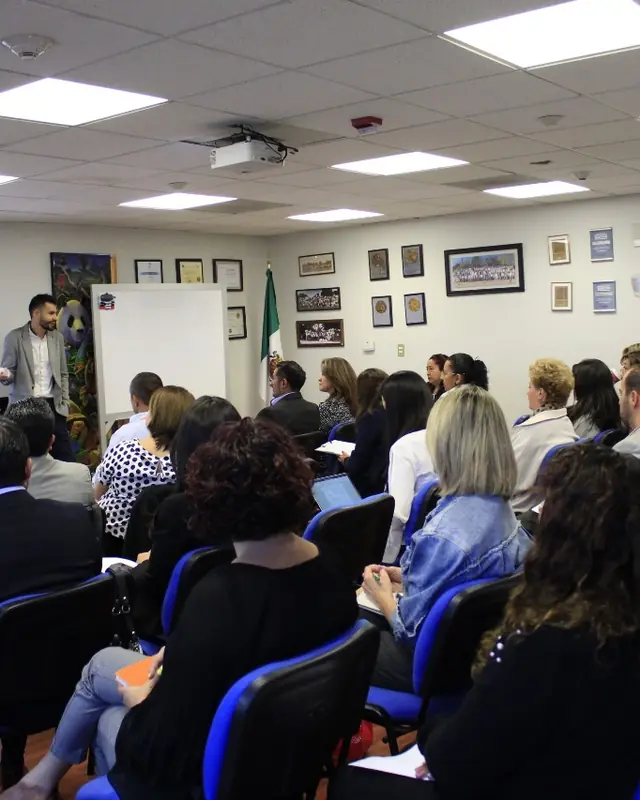
Taller en vivo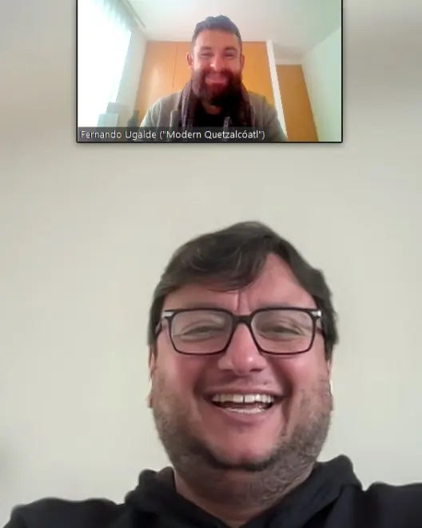
Sesión 1:1 · En línea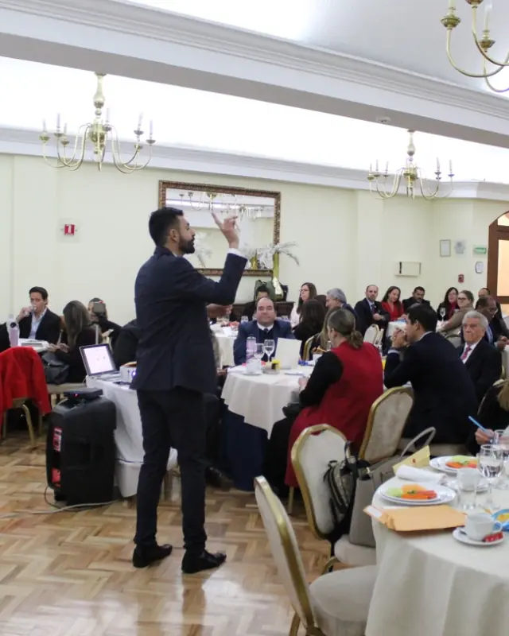
Kick off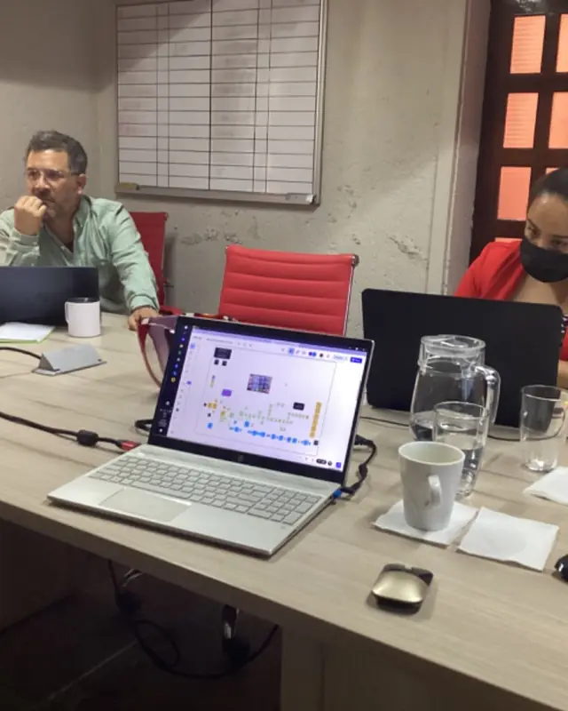
Workshop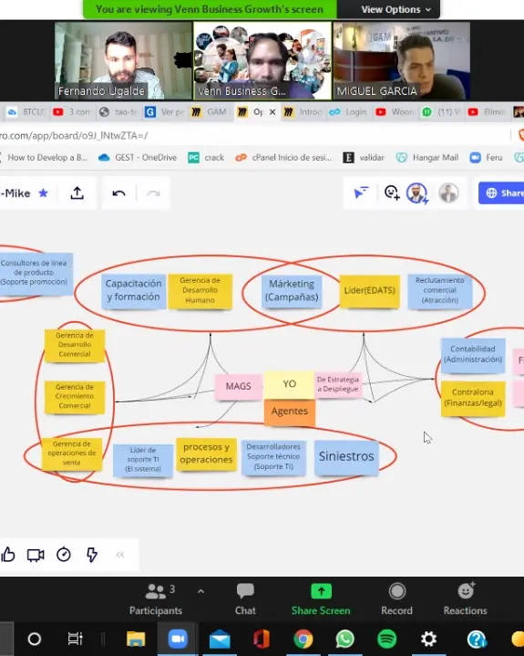
CX Design Workshop Punto de Partida
¿Cuándo será tu momento?
¿Cuánto más vas a seguir cargando con ese dolor?¿Qué estás esperando para recuperar tu tiempo, tu energía, tu paz?
Empieza con tu Evaluación de Fracturas Raíz (5 minutos por dimensión, sin costo). Si te hace sentido, agenda tu Sesión de Mapeo de 60 minutos: miramos juntos tu arquitectura humana y elegimos la ruta que mejor se ajusta a tu necesidad y a tus objetivos.
- 100% abonables a tu programa si te inscribes en 4 semanas
Hacer mi Evaluación de Fracturas Raíz
Ya lo tengo claro: agendar Sesión de Mapeo ($1,000 MXN / $55 USD)
¿Dudas? Escríbeme por WhatsApp
Recuerda… tú eres tiempo.